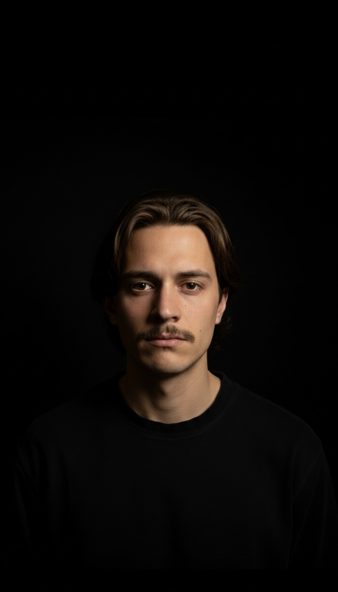
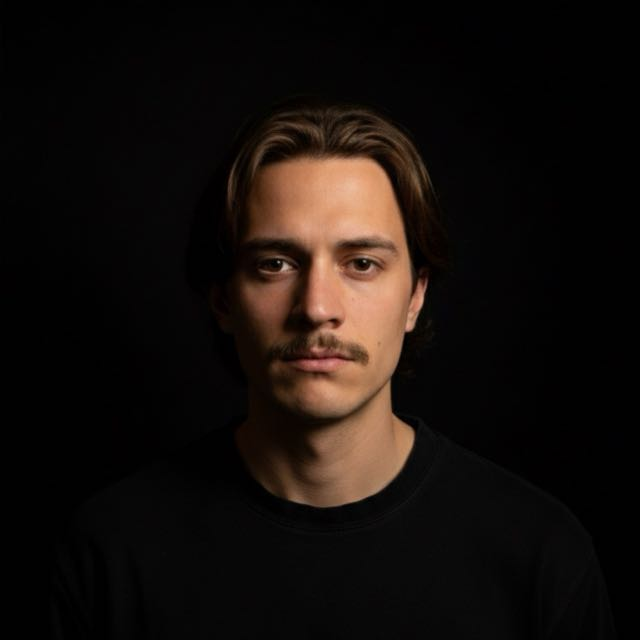

Invertís en contenido y en ads. Publicás. Pero los resultados no aparecen. No porque estés haciendo mal las cosas. Sino porque nadie definió bien qué decir, a quién y para qué. Eso es lo que resuelvo.
Hablemos →Antes de ejecutar, hay que saber adónde ir. Trabajo con negocios y profesionales B2B que necesitan ordenar su comunicación y hacer que su marketing tenga dirección real.
Para negocios que necesitan pensamiento estratégico sin contratar un director de marketing. Entro al equipo, entiendo el negocio y defino la dirección. Las decisiones de marketing dejan de ser intuición y empiezan a tener lógica.
Contenido que posiciona antes de que el cliente te busque. Artículos, casos de estudio y piezas que construyen autoridad orgánica en tu sector. No es contenido por contenido. Es contenido que trabaja mientras vos no estás.
Campañas con estructura y criterio. Meta Ads orientado a resultados reales, no a métricas de vanidad. Si no hay dirección estratégica detrás, solo quemás presupuesto.
Para fundadores y profesionales que necesitan que su nombre abra puertas. Narrativa, contenido y posicionamiento que construyen autoridad sin depender de la red de contactos de siempre.
No ejecuto primero y pregunto después. Antes de cualquier campaña, post o anuncio, hay una pregunta que muy pocos se hacen: ¿esto tiene dirección o solo tiene movimiento?
Leo el contexto antes de proponer soluciones.
Conecto comunicación con objetivos de negocio reales.
Uso IA como sistema interno, no como promesa de venta.
Trabajo en España y Argentina, con experiencia en ambos mercados.
Llegaron con comunicación orientada al consumidor final en un negocio que vende a profesionales del sector. Redefinimos la estrategia hacia B2B, construimos contenido para el canal correcto y estructuramos las campañas sobre esa base.
Diseñé e implementé un sistema de contenido inbound orientado a B2B sin depender de plataformas como HubSpot.
Sin nombre, sin redes, sin comunidad. Construimos la marca completa desde cero: concepto, narrativa, identidad y comunicación mensual.
Un año y medio después es una marca reconocida localmente con comunidad activa.
Invertían en performance sin estrategia de comunicación detrás. Las campañas funcionaban de forma aislada pero sin narrativa que las sostuviera.
Integramos los dos niveles y ahora apuntan en la misma dirección.
La marca existía globalmente pero no en Argentina. Lideramos el lanzamiento local: posicionamiento, estrategia de comunicación adaptada al mercado y estructura del equipo de ejecución.
Cinco años de trabajo en estrategia de comunicación para la marca de cascos más grande de Argentina. Cuando ya sos líder, el desafío es sostener ese lugar con una narrativa que lo justifique.
Curador nació como un ecommerce B2C de café de especialidad. El negocio evolucionó: pasaron a ser importadores de grano verde para tostadores profesionales en Europa y a ofrecer experiencias de catas. El modelo cambió completamente, pero la comunicación no lo había acompañado.
Reorientamos la estrategia de comunicación y marca para reflejar ese nuevo posicionamiento: de tienda de café a referente B2B en importación de origen y formación sensorial. Definimos pilares de marca, dirección de contenido y acompañamiento estratégico para que cada canal comunicara el nuevo lugar del negocio.

Fundé tep agency en 2018. Durante 8 años construí una agencia creativa de comunicación y marketing que llegó a un equipo de 20 personas: diseño gráfico, social media, paid media, audiovisual y programación.
Trabajé con más de 30 marcas en Argentina y España. Empresas de servicios profesionales, fábricas, industrias B2B y marcas de consumo. Clientes muy distintos con un problema en común: necesitaban que su comunicación tuviera dirección.
En paralelo, co-fundé Lacreme en 2021, una marca de moda streetwear en Rosario donde sigo siendo socio y responsable del marketing de performance y comunicación.
Lo que aprendí en ese tiempo es que el mayor problema de las marcas no es la ejecución. Es que nadie entiende bien qué quieren comunicar ni a quién.
Eso es lo que hago: entender lo que el cliente necesita decir antes de que sepa cómo decirlo.
La inteligencia artificial no reemplaza el criterio. Lo amplifica.
Si llegaste hasta acá, probablemente ya sabés la respuesta. Hablemos.